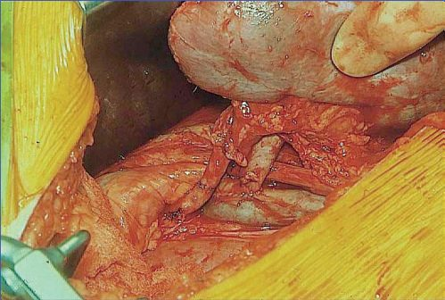

Kidney and Pancreas Transplantation
Summary
- Kidney transplantation is the commonest form of organ transplant [1], and it is the operation against which the rest of transplant surgery is measured: all patients with end-stage renal failure should be considered for renal transplant unless there are specific contraindications [1].
- Pancreas transplantation is grouped with it because 90% of pancreas transplants are performed simultaneously with a kidney.
- This page covers matching, the operation, postoperative course, the specific complications (urine leak, lymphocele, vascular thrombosis) and the results. Transplantation extends life by 15 years, and the commonest cause of death afterwards is myocardial infarction [2].
Definition
Three types of pancreas transplant are performed [1]:
- SPK, simultaneous pancreas and kidney, 90% of all pancreas transplants, for type 1 diabetes with end-stage renal failure.
- PAK, pancreas after kidney, in diabetic patients who have already had a kidney transplant, usually from a living donor.
- PTA, pancreas transplant alone, for type 1 diabetes with normal kidney function but life-threatening complications such as recurrent hypoglycaemic unawareness.
Pathophysiology
The transplanted kidney does not replace the native kidneys' position or their vasculature. It is placed extraperitoneally in the iliac fossa and anastomosed to the iliac vessels, which is why the complications are those of an iliac-fossa organ (lymphocele, ureteric problems and iliac vascular thrombosis) rather than those of the renal bed [1][2].
In a living donor the remaining kidney hypertrophies [2].
Pancreas transplantation corrects some diabetic complications and not others. Successful pancreas and kidney transplantation stabilises retinopathy, decreases neuropathy, increases nerve conduction velocity, and reduces autonomic dysfunction including gastroparesis and orthostatic hypotension, but there is no reversal of vascular disease [2].
Clinical features
Postoperative oliguria is usually acute tubular necrosis, whose pathology shows dilation and loss of tubules; postoperative diuresis is usually due to urea and glucose [2]. The Oxford Handbook frames the same period differently: delayed graft function with oliguria or anuria is common early, especially after ischaemic injury before retrieval or a prolonged cold ischaemic time, and intermittent haemodialysis may be needed; polyuria is then common once the kidney starts working, until tubular function recovers, and fluid must be replaced to prevent pre-renal failure of the graft [1].
New proteinuria suggests renal vein thrombosis [2].
Postoperative diabetes is a side effect of ciclosporin, tacrolimus and steroids rather than a graft problem [2].
Acute rejection usually occurs in the first 6 months and shows tubulitis on pathology, with vasculitis in the more severe form; chronic rejection is usually not seen until after 1 year and has no good treatment [2].
Pancreas rejection is hard to diagnose if the patient does not also have a kidney transplant, one of the practical arguments for SPK; when it can be detected it shows as a rising glucose or amylase, with fever and leucocytosis [2].
Etiology
A surprising number of donor findings do not disqualify a kidney. A urinary tract infection still allows the kidney to be used; an acute rise in creatinine from 1.0 to 3.0 still allows the kidney to be used; and HIV is not a contraindication [2]. In living donors, a dual collecting system is not a contraindication either [2].
- Pancreas transplantation carries greater morbidity and mortality than kidney transplantation because of the increased risk of cardiovascular complications in the diabetic population, so donor and recipient selection criteria are fairly stringent [1].
- It is predominantly performed in type 1 diabetes, though it has recently been shown to benefit a select group with type 2 [1].
- The ABSITE Review gives the commonest indication as diabetes with renal failure [2].
Diagnosis
Kidney rejection workup is triggered by a rising creatinine or poor urine output [2]. It comprises ultrasound with duplex (to exclude a vascular problem and ureteric obstruction) and biopsy, together with an empirical reduction in ciclosporin or tacrolimus, since both are nephrotoxic, empirical pulse steroids, and an empirical fluid and furosemide challenge [2].
Graft function is monitored by serial creatinine measurements, and early graft failure is usually lack of perfusion from arterial or venous thrombosis, so perfusion should be assessed by Doppler ultrasound if there is no immediate graft function [1]. Biopsy to confirm suspected rejection is done percutaneously under ultrasound guidance [1].
Renal artery stenosis is diagnosed on ultrasound, where flow acceleration occurs at the level of the stenosis [2].
Thresholds and severity
Matching requires ABO compatibility and a negative crossmatch [2]. Donor and recipient must normally be ABO-compatible, since hyperacute rejection occurs in ABO-incompatible patients unless desensitisation has been performed preoperatively [1].
Graft survival is better with no more than one mismatch for HLA-A and/or HLA-B and no mismatches for HLA-DR [1].
Children are given priority, and even small children can receive adult kidneys [1].
UK kidney transplant results are reported as graft and patient survival at 1 and 5 years, and the living-donor advantage is consistent across all four [1].
| Measure | Deceased donor | Living donor |
|---|---|---|
| Graft survival, 1 year | 94% | 98% |
| Graft survival, 5 years | 86% | 92% |
| Patient survival, 1 year | 96% | 99% |
| Patient survival, 5 years | 88% | 95% |
UK activity in 2016-17 was 3042 kidney transplants (1218 DBD, 887 DCD and 937 living donor) against around 6000 patients on the waiting list [1].
Pancreas activity is far smaller and overwhelmingly combined. A total of 179 pancreas transplants were performed in the UK in 2016-17, of which 162 (91%) were SPK and 17 (9%) were either PTA or PAK [1]. One-year graft survival for SPK is 87% with patient survival 97%, substantially improved in recent years through advances in immunosuppression and surgical technique and refinement of donor and recipient selection [1].
Preoperative native nephrectomy is only occasionally needed, for continued or recurrent urinary infection, tuberculosis of the kidney, or massive polycystic kidney disease [1].
Treatment and Management
Early postoperative management centres on balancing adequate renal perfusion against blood pressure control [1].
Complications are managed by cause [1][2]:
- Urine leak, drainage and stenting is best. The Oxford Handbook notes it can often be managed by urinary catheterisation for 6 weeks, followed by cystogram to confirm healing, with re-implantation of the ureter if required.
- Renal artery stenosis, percutaneous angioplasty with a stent.
- Ureteric stenosis, ureteroplasty and a stent, or surgery.
- Lymphocele, percutaneous drainage first; if that fails, a peritoneal window, making a hole in the peritoneum so lymphatic fluid drains into it and is reabsorbed, which is 95% successful. The Oxford Handbook describes the same as laparoscopic or open marsupialisation into the peritoneum.
- Viral infection, CMV treated with ganciclovir, HSV with aciclovir.
- Renal vein or artery thrombosis, may result in loss of the kidney.
Procedural interventions
The kidney is placed extraperitoneally into the iliac fossa, and either kidney can go into either iliac fossa [1]. The renal vessels are anastomosed to the external iliac vessels, with the common or internal iliac artery used if the external is diseased, and the ureter is anastomosed to the bladder, usually over a stent [1].
The pancreas is retrieved as the whole organ with the duodenum attached, and transplanted either intraperitoneally or extraperitoneally into the right iliac fossa using techniques similar to renal transplantation [1]. Its dual arterial supply, from splenic artery and SMA branches, is reconstructed as an arterial Y-graft [1]. The ABSITE Review states the requirement as needing both the donor coeliac artery and SMA for arterial supply, and the donor portal vein for venous drainage [2].
Most units use enteric drainage for the pancreatic duct: the second part of the donor duodenum is taken along with the ampulla of Vater and the pancreas, and the donor duodenum is anastomosed to recipient bowel [2].

Complications
Urine leak is the commonest complication of kidney transplantation [2].
Lymphocele is the most common cause of external ureteric compression, most often occurring 3 weeks after transplantation and presenting as late reduction in urine output with hydronephrosis and a fluid collection [2].
Venous thrombosis is the commonest complication of pancreas transplantation, and is hard to treat [2].
For living kidney donors, the commonest complication is wound infection at 1%, and the commonest cause of death is fatal pulmonary embolism [2].
Outcomes
Five-year graft survival overall is 70% (65% for cadaveric and 75% for living donor grafts) and transplantation extends life by 15 years [2]. The UK figures above are higher and more recent, and are broken down by graft against patient survival.
Mortality after kidney transplantation is primarily from stroke and myocardial infarction, with myocardial infarction the commonest single cause [2], which is the reason cardiovascular risk dominates the long-term follow-up of a patient whose kidney is working perfectly well.
References
- Oxford Handbook of Clinical Surgery, 5th ed., Ch. 20 Transplantation
- The ABSITE Review, 2022, Ch. 12 Transplantation
- Bailey & Love's Short Practice of Surgery, 28th ed., Ch. 88 Kidney transplantation and the principles of transplantation